STE12
YHR084W
Transcription factor that is activated by a MAP kinase signaling cascade, activates genes involved in mating or pseudohyphal/invasive growth pathways; cooperates with Tec1p transcription factor to regulate genes specific for invasive growth
Best-performing DNA-binding model.

View and copy the recommended matrices ↘
A | 0.01 0.01 0.97 0.97 0.97 0.01 0.80 C | 0.01 0.01 0.01 0.01 0.01 0.97 0.03 G | 0.01 0.97 0.01 0.01 0.01 0.01 0.14 T | 0.97 0.01 0.01 0.01 0.01 0.01 0.03
A | 1 1 97 97 97 1 80 C | 1 1 1 1 1 97 3 G | 1 97 1 1 1 1 14 T | 97 1 1 1 1 1 3
A | -3.47 -3.47 1.11 1.11 1.11 -3.47 0.92 C | -2.89 -2.89 -2.89 -2.89 -2.89 1.68 -1.79 G | -2.89 1.68 -2.89 -2.89 -2.89 -2.89 -0.25 T | 1.11 -3.47 -3.47 -3.47 -3.47 -3.47 -2.37
Alternative candidate matrices 32
Historical matrix candidates from the original ScerTF database. Expand a source to inspect its original logo, scores, and matrix values.
STE12_AFoat et. al.P = 1.39e-15View matrix ↘
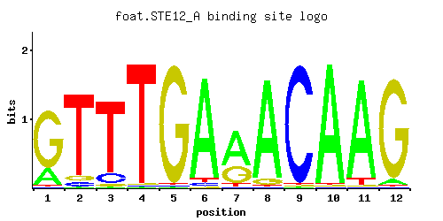
A | 0.01 0.06 0.01 0.01 0.01 0.05 0.03 0.01 0.97 0.84 0.88 0.01 C | 0.93 0.01 0.01 0.01 0.06 0.31 0.01 0.97 0.01 0.03 0.06 0.77 G | 0.01 0.01 0.01 0.97 0.01 0.01 0.03 0.01 0.01 0.12 0.05 0.01 T | 0.05 0.93 0.97 0.01 0.93 0.63 0.93 0.01 0.01 0.01 0.01 0.22
A | 1 6 1 1 1 5 3 1 97 84 88 1 C | 93 1 1 1 6 31 1 97 1 3 6 77 G | 1 1 1 97 1 1 3 1 1 12 5 1 T | 5 93 97 1 93 63 93 1 1 1 1 22
A | -3.47 -1.67 -3.47 -3.47 -3.47 -1.86 -2.37 -3.47 1.11 0.97 1.01 -3.47 C | 1.64 -2.89 -2.89 -2.89 -1.10 0.54 -2.89 1.68 -2.89 -1.79 -1.10 1.45 G | -2.89 -2.89 -2.89 1.68 -2.89 -2.89 -1.79 -2.89 -2.89 -0.41 -1.28 -2.89 T | -1.86 1.07 1.11 -3.47 1.07 0.68 1.07 -3.47 -3.47 -3.47 -3.47 -0.37
STE12_AAFoat et. al.P = 0.002207View matrix ↘
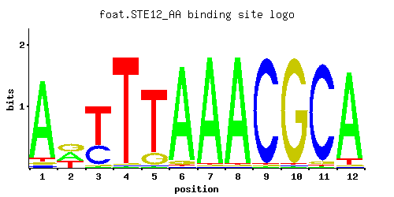
A | 0.06 0.01 0.01 0.01 0.01 0.01 0.01 0.83 0.97 0.66 0.27 0.04 C | 0.01 0.03 0.97 0.01 0.01 0.01 0.04 0.16 0.01 0.01 0.37 0.03 G | 0.01 0.95 0.01 0.97 0.01 0.01 0.01 0.01 0.01 0.33 0.01 0.03 T | 0.92 0.01 0.01 0.01 0.97 0.97 0.94 0.01 0.01 0.01 0.36 0.90
A | 6 1 1 1 1 1 1 83 97 66 27 4 C | 1 3 97 1 1 1 4 16 1 1 37 3 G | 1 95 1 97 1 1 1 1 1 33 1 3 T | 92 1 1 1 97 97 94 1 1 1 36 90
A | -1.67 -3.47 -3.47 -3.47 -3.47 -3.47 -3.47 0.95 1.11 0.72 -0.17 -2.08 C | -2.89 -1.79 1.68 -2.89 -2.89 -2.89 -1.50 -0.12 -2.89 -2.89 0.72 -1.79 G | -2.89 1.66 -2.89 1.68 -2.89 -2.89 -2.89 -2.89 -2.89 0.61 -2.89 -1.79 T | 1.06 -3.47 -3.47 -3.47 1.11 1.11 1.08 -3.47 -3.47 -3.47 0.12 1.03
STE12_BFoat et. al.P = 9.22e-25View matrix ↘
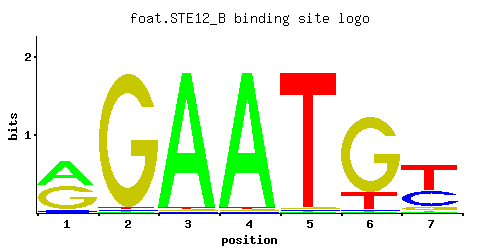
A | 0.47 0.01 0.97 0.97 0.01 0.01 0.02 C | 0.07 0.01 0.01 0.01 0.01 0.01 0.34 G | 0.46 0.97 0.01 0.01 0.01 0.81 0.09 T | 0.01 0.01 0.01 0.01 0.97 0.17 0.55
A | 47 1 97 97 1 1 2 C | 7 1 1 1 1 1 34 G | 46 97 1 1 1 81 9 T | 1 1 1 1 97 17 55
A | 0.38 -3.47 1.11 1.11 -3.47 -3.47 -2.77 C | -0.94 -2.89 -2.89 -2.89 -2.89 -2.89 0.64 G | 0.94 1.68 -2.89 -2.89 -2.89 1.50 -0.69 T | -3.47 -3.47 -3.47 -3.47 1.11 -0.63 0.54
STE12_CFoat et. al.P = 1View matrix ↘
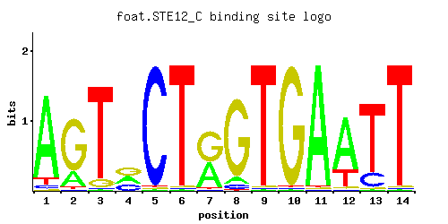
A | 0.88 0.21 0.01 0.34 0.01 0.01 0.43 0.07 0.01 0.01 0.97 0.74 0.01 0.01 C | 0.04 0.01 0.01 0.28 0.97 0.01 0.01 0.05 0.01 0.01 0.01 0.01 0.17 0.01 G | 0.01 0.75 0.08 0.35 0.01 0.01 0.54 0.87 0.01 0.97 0.01 0.02 0.01 0.01 T | 0.07 0.03 0.90 0.02 0.01 0.97 0.02 0.01 0.97 0.01 0.01 0.24 0.81 0.97
A | 88 21 1 34 1 1 43 7 1 1 97 74 1 1 C | 4 1 1 28 97 1 1 5 1 1 1 1 17 1 G | 1 75 8 35 1 1 54 87 1 97 1 2 1 1 T | 7 3 90 2 1 97 2 1 97 1 1 24 81 97
A | 1.01 -0.42 -3.47 0.06 -3.47 -3.47 0.30 -1.52 -3.47 -3.47 1.11 0.84 -3.47 -3.47 C | -1.50 -2.89 -2.89 0.44 1.68 -2.89 -2.89 -1.28 -2.89 -2.89 -2.89 -2.89 -0.06 -2.89 G | -2.89 1.43 -0.81 0.66 -2.89 -2.89 1.10 1.58 -2.89 1.68 -2.89 -2.20 -2.89 -2.89 T | -1.52 -2.37 1.03 -2.77 -3.47 1.11 -2.77 -3.47 1.11 -3.47 -3.47 -0.29 0.93 1.11
STE12_DFoat et. al.P = 2.54e-05View matrix ↘
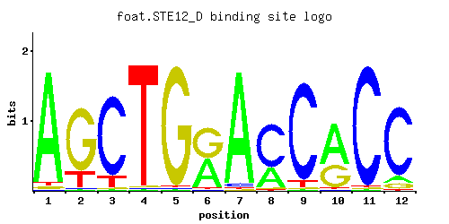
A | 0.01 0.01 0.01 0.06 0.01 0.01 0.01 0.01 0.97 0.12 0.19 0.02 C | 0.07 0.01 0.36 0.01 0.02 0.01 0.52 0.97 0.01 0.01 0.79 0.02 G | 0.84 0.97 0.01 0.92 0.67 0.03 0.01 0.01 0.01 0.86 0.01 0.01 T | 0.08 0.01 0.63 0.01 0.30 0.95 0.47 0.01 0.01 0.01 0.01 0.95
A | 1 1 1 6 1 1 1 1 97 12 19 2 C | 7 1 36 1 2 1 52 97 1 1 79 2 G | 84 97 1 92 67 3 1 1 1 86 1 1 T | 8 1 63 1 30 95 47 1 1 1 1 95
A | -3.47 -3.47 -3.47 -1.67 -3.47 -3.47 -3.47 -3.47 1.11 -0.98 -0.52 -2.77 C | -0.94 -2.89 0.69 -2.89 -2.20 -2.89 1.06 1.68 -2.89 -2.89 1.48 -2.20 G | 1.54 1.68 -2.89 1.63 1.31 -1.79 -2.89 -2.89 -2.89 1.56 -2.89 -2.89 T | -1.39 -3.47 0.68 -3.47 -0.06 1.09 0.38 -3.47 -3.47 -3.47 -3.47 1.09
STE12_EFoat et. al.P = 4.12e-21View matrix ↘
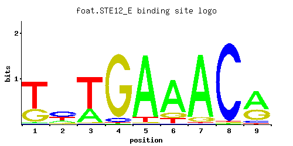
A | 0.01 0.01 0.01 0.11 0.07 0.01 0.70 0.27 0.65 C | 0.35 0.01 0.07 0.12 0.01 0.92 0.01 0.10 0.32 G | 0.07 0.97 0.01 0.01 0.01 0.06 0.01 0.48 0.01 T | 0.58 0.01 0.92 0.76 0.91 0.01 0.29 0.14 0.02
A | 1 1 1 11 7 1 70 27 65 C | 35 1 7 12 1 92 1 10 32 G | 7 97 1 1 1 6 1 48 1 T | 57 1 92 76 91 1 28 14 2
A | -3.47 -3.47 -3.47 -1.07 -1.52 -3.47 0.78 -0.17 0.71 C | 0.66 -2.89 -0.94 -0.41 -2.89 1.63 -2.89 -0.59 0.58 G | -0.94 1.68 -2.89 -2.89 -2.89 -1.10 -2.89 0.98 -2.89 T | 0.59 -3.47 1.06 0.86 1.05 -3.47 -0.10 -0.83 -2.77
STE12_FFoat et. al.P = 0.00281View matrix ↘
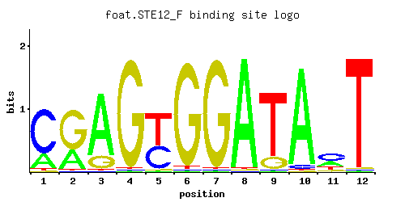
A | 0.97 0.15 0.01 0.82 0.01 0.01 0.02 0.58 0.01 0.01 0.01 0.03 C | 0.01 0.09 0.01 0.16 0.01 0.97 0.96 0.01 0.97 0.17 0.66 0.01 G | 0.01 0.48 0.04 0.01 0.01 0.01 0.01 0.41 0.01 0.01 0.01 0.74 T | 0.01 0.28 0.94 0.01 0.97 0.01 0.01 0.01 0.01 0.81 0.31 0.23
A | 97 15 1 82 1 1 2 57 1 1 1 3 C | 1 9 1 16 1 97 96 1 97 17 66 1 G | 1 48 4 1 1 1 1 41 1 1 1 74 T | 1 28 94 1 97 1 1 1 1 81 31 23
A | 1.11 -0.76 -3.47 0.94 -3.47 -3.47 -2.77 0.59 -3.47 -3.47 -3.47 -2.37 C | -2.89 -0.69 -2.89 -0.12 -2.89 1.68 1.67 -2.89 1.68 -0.06 1.30 -2.89 G | -2.89 0.98 -1.50 -2.89 -2.89 -2.89 -2.89 0.82 -2.89 -2.89 -2.89 1.41 T | -3.47 -0.13 1.08 -3.47 1.11 -3.47 -3.47 -3.47 -3.47 0.93 -0.03 -0.33
STE12_GFoat et. al.P = 2.09e-16View matrix ↘
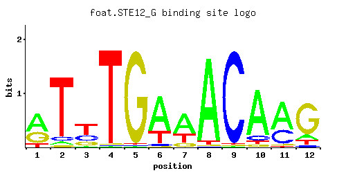
A | 0.10 0.01 0.05 0.01 0.04 0.26 0.25 0.01 0.97 0.50 0.87 0.10 C | 0.74 0.04 0.05 0.01 0.01 0.13 0.01 0.97 0.01 0.19 0.03 0.35 G | 0.05 0.32 0.09 0.97 0.01 0.01 0.04 0.01 0.01 0.28 0.06 0.01 T | 0.11 0.63 0.82 0.01 0.95 0.60 0.71 0.01 0.01 0.03 0.04 0.54
A | 10 1 5 1 4 26 25 1 97 50 87 10 C | 74 4 5 1 1 13 1 97 1 19 3 35 G | 5 32 9 97 1 1 4 1 1 28 6 1 T | 11 63 82 1 95 60 71 1 1 3 4 54
A | -1.16 -3.47 -1.86 -3.47 -2.08 -0.21 -0.25 -3.47 1.11 0.45 1.00 -1.16 C | 1.41 -1.50 -1.28 -2.89 -2.89 -0.33 -2.89 1.68 -2.89 0.05 -1.79 0.66 G | -1.28 0.58 -0.69 1.68 -2.89 -2.89 -1.50 -2.89 -2.89 0.44 -1.10 -2.89 T | -1.07 0.68 0.94 -3.47 1.09 0.63 0.80 -3.47 -3.47 -2.37 -2.08 0.52
STE12_HFoat et. al.P = 0.005196View matrix ↘
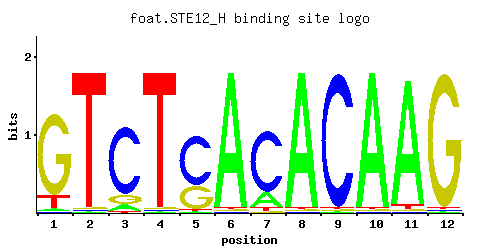
A | 0.01 0.03 0.01 0.01 0.01 0.04 0.01 0.01 0.97 0.01 0.97 0.13 C | 0.97 0.01 0.01 0.01 0.01 0.01 0.01 0.32 0.01 0.11 0.01 0.85 G | 0.01 0.01 0.01 0.97 0.01 0.77 0.01 0.67 0.01 0.81 0.01 0.01 T | 0.01 0.95 0.97 0.01 0.97 0.18 0.97 0.01 0.01 0.07 0.01 0.02
A | 1 3 1 1 1 4 1 1 97 1 97 13 C | 97 1 1 1 1 1 1 32 1 11 1 85 G | 1 1 1 97 1 77 1 67 1 81 1 1 T | 1 95 97 1 97 18 97 1 1 7 1 2
A | -3.47 -2.37 -3.47 -3.47 -3.47 -2.08 -3.47 -3.47 1.11 -3.47 1.11 -0.90 C | 1.68 -2.89 -2.89 -2.89 -2.89 -2.89 -2.89 0.58 -2.89 -0.49 -2.89 1.55 G | -2.89 -2.89 -2.89 1.68 -2.89 1.45 -2.89 1.31 -2.89 1.50 -2.89 -2.89 T | -3.47 1.09 1.11 -3.47 1.11 -0.58 1.11 -3.47 -3.47 -1.52 -3.47 -2.77
STE12_IFoat et. al.P = 1.67e-09View matrix ↘
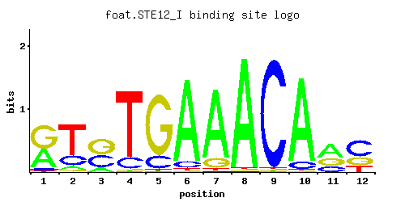
A | 0.19 0.01 0.01 0.01 0.01 0.02 0.02 0.01 0.83 0.01 0.68 0.01 C | 0.28 0.29 0.01 0.01 0.01 0.12 0.01 0.81 0.01 0.49 0.03 0.54 G | 0.53 0.23 0.08 0.97 0.01 0.01 0.07 0.17 0.15 0.38 0.21 0.05 T | 0.01 0.48 0.91 0.01 0.97 0.85 0.90 0.01 0.01 0.13 0.08 0.41
A | 19 1 1 1 1 2 2 1 83 1 68 1 C | 28 28 1 1 1 12 1 81 1 49 3 54 G | 53 23 8 97 1 1 7 17 15 38 21 5 T | 1 48 91 1 97 85 90 1 1 13 8 41
A | -0.52 -3.47 -3.47 -3.47 -3.47 -2.77 -2.77 -3.47 0.95 -3.47 0.75 -3.47 C | 0.44 0.48 -2.89 -2.89 -2.89 -0.41 -2.89 1.50 -2.89 1.00 -1.79 1.10 G | 1.08 0.25 -0.81 1.68 -2.89 -2.89 -0.94 -0.06 -0.18 0.75 0.15 -1.28 T | -3.47 0.41 1.05 -3.47 1.11 0.98 1.03 -3.47 -3.47 -0.90 -1.39 0.25
STE12_JFoat et. al.P = 1.74e-21View matrix ↘
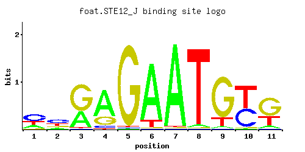
A | 0.24 0.13 0.36 0.69 0.01 0.87 0.97 0.03 0.04 0.01 0.09 C | 0.48 0.45 0.01 0.06 0.01 0.01 0.01 0.01 0.01 0.45 0.02 G | 0.05 0.16 0.63 0.23 0.97 0.01 0.01 0.01 0.80 0.01 0.61 T | 0.24 0.26 0.01 0.02 0.01 0.11 0.01 0.95 0.15 0.54 0.28
A | 24 13 36 69 1 87 97 3 4 1 9 C | 48 45 1 6 1 1 1 1 1 45 2 G | 5 16 63 23 97 1 1 1 80 1 61 T | 24 26 1 2 1 11 1 95 15 54 28
A | -0.29 -0.90 0.12 0.77 -3.47 1.00 1.11 -2.37 -2.08 -3.47 -1.27 C | 0.98 0.92 -2.89 -1.10 -2.89 -2.89 -2.89 -2.89 -2.89 0.92 -2.20 G | -1.28 -0.12 1.25 0.25 1.68 -2.89 -2.89 -2.89 1.49 -2.89 1.22 T | -0.29 -0.21 -3.47 -2.77 -3.47 -1.07 -3.47 1.09 -0.76 0.52 -0.13
STE12_KFoat et. al.P = 2.03e-17View matrix ↘
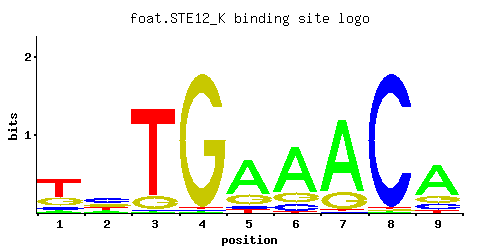
A | 0.05 0.01 0.01 0.01 0.06 0.01 0.86 0.17 0.56 C | 0.16 0.01 0.19 0.16 0.20 0.97 0.13 0.26 0.25 G | 0.14 0.97 0.01 0.12 0.07 0.01 0.01 0.44 0.11 T | 0.66 0.01 0.79 0.71 0.67 0.01 0.01 0.13 0.08
A | 5 1 1 1 6 1 86 17 56 C | 16 1 19 16 20 97 13 26 25 G | 14 97 1 12 7 1 1 44 11 T | 66 1 79 71 67 1 1 13 8
A | -1.86 -3.47 -3.47 -3.47 -1.67 -3.47 0.99 -0.63 0.56 C | -0.12 -2.89 0.05 -0.12 0.11 1.68 -0.33 0.37 0.33 G | -0.25 1.68 -2.89 -0.41 -0.94 -2.89 -2.89 0.89 -0.49 T | 0.72 -3.47 0.90 0.80 0.74 -3.47 -3.47 -0.90 -1.39
STE12_LFoat et. al.P = 7.44e-09View matrix ↘
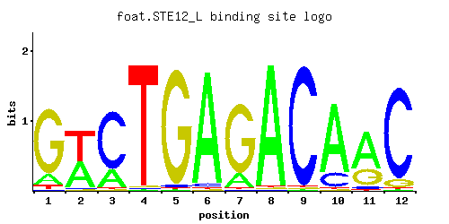
A | 0.01 0.01 0.01 0.01 0.01 0.01 0.01 0.01 0.97 0.01 0.53 0.04 C | 0.08 0.29 0.01 0.01 0.01 0.82 0.01 0.96 0.01 0.01 0.01 0.82 G | 0.90 0.05 0.17 0.97 0.01 0.01 0.03 0.02 0.01 0.76 0.02 0.01 T | 0.01 0.65 0.81 0.01 0.97 0.16 0.95 0.01 0.01 0.22 0.45 0.13
A | 1 1 1 1 1 1 1 1 97 1 53 4 C | 8 28 1 1 1 82 1 96 1 1 1 82 G | 90 5 17 97 1 1 3 2 1 76 2 1 T | 1 65 81 1 97 16 95 1 1 22 45 13
A | -3.47 -3.47 -3.47 -3.47 -3.47 -3.47 -3.47 -3.47 1.11 -3.47 0.50 -2.08 C | -0.81 0.48 -2.89 -2.89 -2.89 1.52 -2.89 1.67 -2.89 -2.89 -2.89 1.52 G | 1.61 -1.28 -0.06 1.68 -2.89 -2.89 -1.79 -2.20 -2.89 1.44 -2.20 -2.89 T | -3.47 0.71 0.93 -3.47 1.11 -0.69 1.09 -3.47 -3.47 -0.37 0.34 -0.90
STE12_MFoat et. al.P = 6.62e-13View matrix ↘
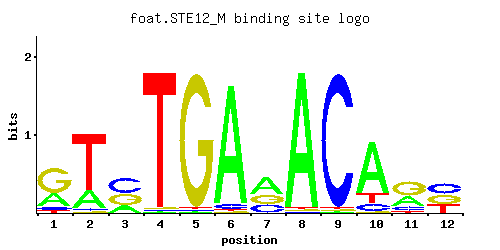
A | 0.31 0.04 0.14 0.01 0.01 0.01 0.01 0.01 0.97 0.01 0.74 0.05 C | 0.33 0.48 0.01 0.01 0.01 0.27 0.01 0.97 0.01 0.33 0.01 0.60 G | 0.35 0.15 0.11 0.97 0.01 0.24 0.04 0.01 0.01 0.46 0.03 0.08 T | 0.01 0.33 0.74 0.01 0.97 0.48 0.93 0.01 0.01 0.20 0.23 0.28
A | 31 4 14 1 1 1 1 1 97 1 74 5 C | 33 48 1 1 1 27 1 97 1 33 1 60 G | 35 15 11 97 1 24 4 1 1 46 3 8 T | 1 33 74 1 97 48 93 1 1 20 23 28
A | -0.03 -2.08 -0.83 -3.47 -3.47 -3.47 -3.47 -3.47 1.11 -3.47 0.84 -1.86 C | 0.61 0.98 -2.89 -2.89 -2.89 0.41 -2.89 1.68 -2.89 0.61 -2.89 1.20 G | 0.66 -0.18 -0.49 1.68 -2.89 0.29 -1.50 -2.89 -2.89 0.94 -1.79 -0.81 T | -3.47 0.03 0.84 -3.47 1.11 0.41 1.07 -3.47 -3.47 -0.47 -0.33 -0.13
STE12_NFoat et. al.P = 1.24e-25View matrix ↘
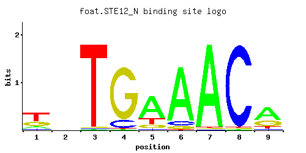
A | 0.10 0.01 0.01 0.01 0.18 0.01 0.97 0.26 0.51 C | 0.25 0.01 0.01 0.05 0.11 0.85 0.01 0.28 0.29 G | 0.07 0.97 0.01 0.07 0.03 0.13 0.01 0.28 0.08 T | 0.58 0.01 0.97 0.87 0.67 0.01 0.01 0.18 0.12
A | 10 1 1 1 18 1 97 26 51 C | 25 1 1 5 11 85 1 28 28 G | 7 97 1 7 3 13 1 28 8 T | 57 1 97 87 67 1 1 18 12
A | -1.16 -3.47 -3.47 -3.47 -0.58 -3.47 1.11 -0.21 0.47 C | 0.33 -2.89 -2.89 -1.28 -0.49 1.55 -2.89 0.44 0.48 G | -0.94 1.68 -2.89 -0.94 -1.79 -0.33 -2.89 0.44 -0.81 T | 0.59 -3.47 1.11 1.00 0.74 -3.47 -3.47 -0.58 -0.98
STE12_OFoat et. al.P = 4.06e-18View matrix ↘
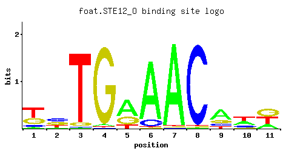
A | 0.35 0.39 0.10 0.01 0.01 0.01 0.13 0.01 0.93 0.20 0.51 C | 0.42 0.08 0.18 0.01 0.01 0.01 0.28 0.96 0.05 0.35 0.33 G | 0.01 0.17 0.15 0.97 0.01 0.10 0.01 0.01 0.01 0.36 0.09 T | 0.22 0.36 0.57 0.01 0.97 0.88 0.58 0.02 0.01 0.08 0.07
A | 35 39 10 1 1 1 13 1 93 20 51 C | 42 8 18 1 1 1 28 96 5 35 33 G | 1 17 15 97 1 10 1 1 1 36 9 T | 22 36 56 1 97 88 57 2 1 8 7
A | 0.09 0.20 -1.16 -3.47 -3.47 -3.47 -0.90 -3.47 1.07 -0.47 0.47 C | 0.85 -0.81 0.00 -2.89 -2.89 -2.89 0.44 1.67 -1.28 0.66 0.61 G | -2.89 -0.06 -0.18 1.68 -2.89 -0.59 -2.89 -2.89 -2.89 0.69 -0.69 T | -0.37 0.12 0.58 -3.47 1.11 1.01 0.59 -2.77 -3.47 -1.39 -1.52
STE12_PFoat et. al.P = 2.45e-10View matrix ↘
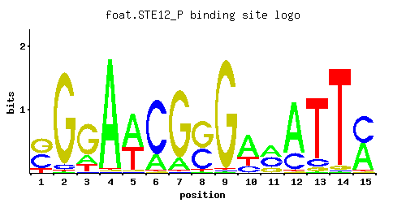
A | 0.01 0.01 0.17 0.97 0.58 0.21 0.14 0.01 0.01 0.59 0.42 0.75 0.01 0.01 0.49 C | 0.43 0.05 0.01 0.01 0.01 0.78 0.01 0.42 0.01 0.18 0.38 0.24 0.10 0.01 0.50 G | 0.45 0.93 0.68 0.01 0.01 0.01 0.85 0.54 0.97 0.01 0.20 0.01 0.06 0.04 0.01 T | 0.12 0.01 0.14 0.01 0.40 0.01 0.01 0.03 0.01 0.22 0.01 0.01 0.83 0.94 0.01
A | 1 1 17 97 57 21 14 1 1 59 42 75 1 1 49 C | 43 5 1 1 1 78 1 42 1 18 38 24 10 1 50 G | 45 93 68 1 1 1 85 54 97 1 20 1 6 4 1 T | 12 1 14 1 40 1 1 3 1 22 1 1 83 94 1
A | -3.47 -3.47 -0.63 1.11 0.59 -0.42 -0.83 -3.47 -3.47 0.61 0.27 0.85 -3.47 -3.47 0.43 C | 0.87 -1.28 -2.89 -2.89 -2.89 1.47 -2.89 0.85 -2.89 0.00 0.75 0.29 -0.59 -2.89 1.02 G | 0.92 1.64 1.33 -2.89 -2.89 -2.89 1.55 1.10 1.68 -2.89 0.11 -2.89 -1.10 -1.50 -2.89 T | -0.98 -3.47 -0.83 -3.47 0.22 -3.47 -3.47 -2.37 -3.47 -0.37 -3.47 -3.47 0.95 1.08 -3.47
STE12_QFoat et. al.P = 2.35e-22View matrix ↘
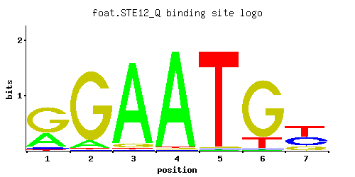
A | 0.31 0.09 0.93 0.97 0.01 0.01 0.01 C | 0.06 0.01 0.01 0.01 0.01 0.01 0.38 G | 0.62 0.89 0.05 0.01 0.01 0.84 0.19 T | 0.01 0.01 0.01 0.01 0.97 0.15 0.42
A | 31 9 93 97 1 1 1 C | 6 1 1 1 1 1 38 G | 62 89 5 1 1 84 19 T | 1 1 1 1 97 15 42
A | -0.03 -1.27 1.07 1.11 -3.47 -3.47 -3.47 C | -1.10 -2.89 -2.89 -2.89 -2.89 -2.89 0.75 G | 1.24 1.60 -1.28 -2.89 -2.89 1.54 0.05 T | -3.47 -3.47 -3.47 -3.47 1.11 -0.76 0.27
STE12_RFoat et. al.P = 7.71e-11View matrix ↘
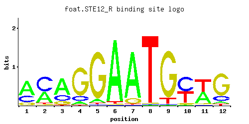
A | 0.59 0.38 0.63 0.08 0.07 0.95 0.87 0.01 0.01 0.01 0.45 0.06 C | 0.28 0.56 0.22 0.14 0.02 0.01 0.01 0.01 0.01 0.53 0.02 0.16 G | 0.12 0.03 0.13 0.77 0.89 0.01 0.11 0.01 0.89 0.05 0.05 0.73 T | 0.01 0.03 0.01 0.01 0.02 0.03 0.01 0.97 0.10 0.41 0.49 0.05
A | 59 38 63 8 7 95 87 1 1 1 45 6 C | 28 56 22 14 2 1 1 1 1 53 2 16 G | 12 3 13 77 89 1 11 1 89 5 5 73 T | 1 3 1 1 2 3 1 97 10 41 49 5
A | 0.61 0.17 0.68 -1.39 -1.52 1.09 1.00 -3.47 -3.47 -3.47 0.34 -1.67 C | 0.44 1.13 0.20 -0.25 -2.20 -2.89 -2.89 -2.89 -2.89 1.08 -2.20 -0.12 G | -0.41 -1.79 -0.33 1.45 1.60 -2.89 -0.49 -2.89 1.60 -1.28 -1.28 1.40 T | -3.47 -2.37 -3.47 -3.47 -2.77 -2.37 -3.47 1.11 -1.16 0.25 0.43 -1.86
STE12_SFoat et. al.P = 7.71e-11View matrix ↘
A | 0.59 0.38 0.63 0.08 0.07 0.95 0.87 0.01 0.01 0.01 0.45 0.06 C | 0.28 0.56 0.22 0.14 0.02 0.01 0.01 0.01 0.01 0.53 0.02 0.16 G | 0.12 0.03 0.13 0.77 0.89 0.01 0.11 0.01 0.89 0.05 0.05 0.73 T | 0.01 0.03 0.01 0.01 0.02 0.03 0.01 0.97 0.10 0.41 0.49 0.05
A | 59 38 63 8 7 95 87 1 1 1 45 6 C | 28 56 22 14 2 1 1 1 1 53 2 16 G | 12 3 13 77 89 1 11 1 89 5 5 73 T | 1 3 1 1 2 3 1 97 10 41 49 5
A | 0.61 0.17 0.68 -1.39 -1.52 1.09 1.00 -3.47 -3.47 -3.47 0.34 -1.67 C | 0.44 1.13 0.20 -0.25 -2.20 -2.89 -2.89 -2.89 -2.89 1.08 -2.20 -0.12 G | -0.41 -1.79 -0.33 1.45 1.60 -2.89 -0.49 -2.89 1.60 -1.28 -1.28 1.40 T | -3.47 -2.37 -3.47 -3.47 -2.77 -2.37 -3.47 1.11 -1.16 0.25 0.43 -1.86
STE12_TFoat et. al.P = 1.65e-06View matrix ↘
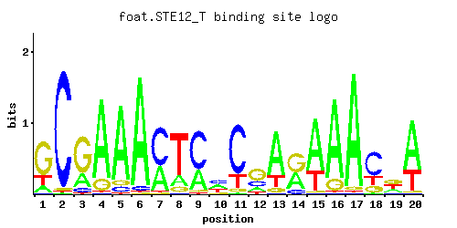
A | 0.13 0.01 0.24 0.85 0.86 0.94 0.38 0.18 0.32 0.33 0.01 0.14 0.72 0.39 0.72 0.86 0.95 0.02 0.20 0.70 C | 0.01 0.96 0.08 0.01 0.07 0.04 0.60 0.01 0.65 0.35 0.75 0.25 0.01 0.11 0.01 0.01 0.01 0.60 0.09 0.01 G | 0.68 0.02 0.67 0.13 0.07 0.01 0.01 0.10 0.03 0.09 0.05 0.53 0.08 0.50 0.01 0.13 0.03 0.17 0.40 0.01 T | 0.19 0.01 0.01 0.01 0.01 0.01 0.01 0.72 0.01 0.24 0.20 0.08 0.19 0.01 0.27 0.01 0.01 0.20 0.30 0.29
A | 13 1 24 85 86 94 38 18 32 33 1 14 72 39 72 86 95 2 20 70 C | 1 96 8 1 7 4 60 1 65 35 75 25 1 11 1 1 1 60 9 1 G | 68 2 67 13 7 1 1 10 3 9 5 53 8 50 1 13 3 17 40 1 T | 19 1 1 1 1 1 1 72 1 24 20 8 19 1 27 1 1 20 30 28
A | -0.90 -3.47 -0.29 0.98 0.99 1.08 0.17 -0.58 0.00 0.03 -3.47 -0.83 0.81 0.20 0.81 0.99 1.09 -2.77 -0.47 0.78 C | -2.89 1.67 -0.81 -2.89 -0.94 -1.50 1.20 -2.89 1.28 0.66 1.43 0.33 -2.89 -0.49 -2.89 -2.89 -2.89 1.20 -0.69 -2.89 G | 1.33 -2.20 1.31 -0.33 -0.94 -2.89 -2.89 -0.59 -1.79 -0.69 -1.28 1.08 -0.81 1.02 -2.89 -0.33 -1.79 -0.06 0.80 -2.89 T | -0.52 -3.47 -3.47 -3.47 -3.47 -3.47 -3.47 0.81 -3.47 -0.29 -0.47 -1.39 -0.52 -3.47 -0.17 -3.47 -3.47 -0.47 -0.06 -0.10
STE12_UFoat et. al.P = 1.47e-29View matrix ↘
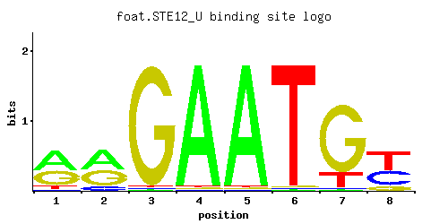
A | 0.51 0.49 0.01 0.97 0.97 0.01 0.01 0.01 C | 0.03 0.11 0.01 0.01 0.01 0.01 0.01 0.39 G | 0.39 0.39 0.97 0.01 0.01 0.01 0.81 0.12 T | 0.08 0.01 0.01 0.01 0.01 0.97 0.17 0.49
A | 51 49 1 97 97 1 1 1 C | 3 11 1 1 1 1 1 39 G | 39 39 97 1 1 1 81 12 T | 8 1 1 1 1 97 17 49
A | 0.47 0.43 -3.47 1.11 1.11 -3.47 -3.47 -3.47 C | -1.79 -0.49 -2.89 -2.89 -2.89 -2.89 -2.89 0.77 G | 0.77 0.77 1.68 -2.89 -2.89 -2.89 1.50 -0.41 T | -1.39 -3.47 -3.47 -3.47 -3.47 1.11 -0.63 0.43
STE12_VFoat et. al.P = 4.57e-29View matrix ↘
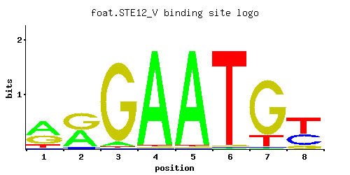
A | 0.52 0.45 0.05 0.97 0.97 0.01 0.01 0.01 C | 0.04 0.07 0.01 0.01 0.01 0.01 0.01 0.34 G | 0.35 0.48 0.93 0.01 0.01 0.01 0.83 0.12 T | 0.10 0.01 0.01 0.01 0.01 0.97 0.16 0.52
A | 52 45 5 97 97 1 1 1 C | 4 7 1 1 1 1 1 34 G | 35 48 93 1 1 1 83 12 T | 10 1 1 1 1 97 16 52
A | 0.49 0.34 -1.86 1.11 1.11 -3.47 -3.47 -3.47 C | -1.50 -0.94 -2.89 -2.89 -2.89 -2.89 -2.89 0.64 G | 0.66 0.98 1.64 -2.89 -2.89 -2.89 1.53 -0.41 T | -1.16 -3.47 -3.47 -3.47 -3.47 1.11 -0.69 0.49
STE12_WFoat et. al.P = 9.52e-05View matrix ↘
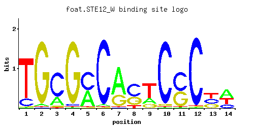
A | 0.31 0.37 0.01 0.01 0.01 0.61 0.10 0.01 0.01 0.01 0.01 0.02 0.01 0.82 C | 0.01 0.30 0.01 0.44 0.03 0.17 0.35 0.29 0.01 0.01 0.95 0.04 0.95 0.01 G | 0.20 0.33 0.97 0.55 0.95 0.01 0.54 0.01 0.95 0.54 0.03 0.71 0.01 0.16 T | 0.48 0.01 0.01 0.01 0.01 0.21 0.01 0.70 0.02 0.45 0.01 0.23 0.03 0.01
A | 31 37 1 1 1 61 10 1 1 1 1 2 1 82 C | 1 30 1 44 3 17 35 28 1 1 95 4 95 1 G | 20 33 97 55 95 1 54 1 95 54 3 71 1 16 T | 48 1 1 1 1 21 1 70 2 45 1 23 3 1
A | -0.03 0.15 -3.47 -3.47 -3.47 0.65 -1.16 -3.47 -3.47 -3.47 -3.47 -2.77 -3.47 0.94 C | -2.89 0.51 -2.89 0.89 -1.79 -0.06 0.66 0.48 -2.89 -2.89 1.66 -1.50 1.66 -2.89 G | 0.11 0.61 1.68 1.12 1.66 -2.89 1.10 -2.89 1.66 1.10 -1.79 1.37 -2.89 -0.12 T | 0.41 -3.47 -3.47 -3.47 -3.47 -0.42 -3.47 0.78 -2.77 0.34 -3.47 -0.33 -2.37 -3.47
STE12_XFoat et. al.P = 0.0001762View matrix ↘
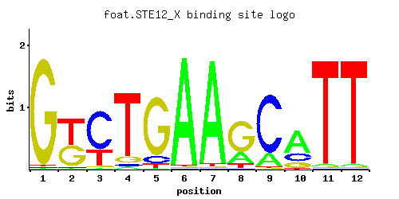
A | 0.97 0.96 0.02 0.01 0.09 0.02 0.01 0.06 0.85 0.28 0.53 0.01 C | 0.01 0.01 0.15 0.01 0.67 0.01 0.01 0.83 0.09 0.03 0.43 0.97 G | 0.01 0.01 0.22 0.81 0.01 0.01 0.01 0.10 0.03 0.69 0.02 0.01 T | 0.02 0.02 0.61 0.18 0.23 0.96 0.97 0.01 0.03 0.01 0.02 0.01
A | 97 96 2 1 9 2 1 6 85 28 53 1 C | 1 1 15 1 67 1 1 83 9 3 43 97 G | 1 1 22 81 1 1 1 10 3 69 2 1 T | 2 2 61 18 23 96 97 1 3 1 2 1
A | 1.11 1.10 -2.77 -3.47 -1.27 -2.77 -3.47 -1.67 0.98 -0.13 0.50 -3.47 C | -2.89 -2.89 -0.18 -2.89 1.31 -2.89 -2.89 1.53 -0.69 -1.79 0.87 1.68 G | -2.89 -2.89 0.20 1.50 -2.89 -2.89 -2.89 -0.59 -1.79 1.34 -2.20 -2.89 T | -2.77 -2.77 0.65 -0.58 -0.33 1.10 1.11 -3.47 -2.37 -3.47 -2.77 -3.47
STE12_YFoat et. al.P = 2.15e-06View matrix ↘
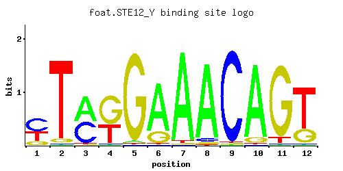
A | 0.74 0.07 0.01 0.01 0.01 0.02 0.01 0.01 0.38 0.01 0.93 0.35 C | 0.25 0.91 0.07 0.01 0.03 0.01 0.20 0.97 0.60 0.01 0.05 0.15 G | 0.01 0.01 0.01 0.97 0.04 0.01 0.01 0.01 0.01 0.46 0.01 0.50 T | 0.01 0.01 0.91 0.01 0.92 0.96 0.78 0.02 0.01 0.53 0.01 0.01
A | 74 7 1 1 1 2 1 1 38 1 93 35 C | 25 91 7 1 3 1 20 97 60 1 5 15 G | 1 1 1 97 4 1 1 1 1 46 1 50 T | 1 1 91 1 92 96 78 2 1 53 1 1
A | 0.84 -1.52 -3.47 -3.47 -3.47 -2.77 -3.47 -3.47 0.17 -3.47 1.07 0.09 C | 0.33 1.62 -0.94 -2.89 -1.79 -2.89 0.11 1.68 1.20 -2.89 -1.28 -0.18 G | -2.89 -2.89 -2.89 1.68 -1.50 -2.89 -2.89 -2.89 -2.89 0.94 -2.89 1.02 T | -3.47 -3.47 1.05 -3.47 1.06 1.10 0.89 -2.77 -3.47 0.50 -3.47 -3.47
STE12_ZFoat et. al.P = 1.05e-07View matrix ↘
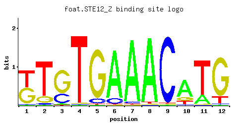
A | 0.14 0.78 0.13 0.01 0.02 0.01 0.01 0.01 0.97 0.01 0.81 0.50 C | 0.84 0.01 0.15 0.01 0.01 0.01 0.01 0.90 0.01 0.68 0.15 0.49 G | 0.02 0.01 0.04 0.97 0.01 0.03 0.10 0.09 0.01 0.28 0.04 0.01 T | 0.01 0.20 0.67 0.01 0.96 0.95 0.89 0.01 0.01 0.03 0.01 0.01
A | 14 78 13 1 2 1 1 1 97 1 81 50 C | 84 1 15 1 1 1 1 90 1 68 15 49 G | 2 1 4 97 1 3 10 9 1 28 4 1 T | 1 20 67 1 96 95 89 1 1 3 1 1
A | -0.83 0.89 -0.90 -3.47 -2.77 -3.47 -3.47 -3.47 1.11 -3.47 0.93 0.45 C | 1.54 -2.89 -0.18 -2.89 -2.89 -2.89 -2.89 1.61 -2.89 1.33 -0.18 1.00 G | -2.20 -2.89 -1.50 1.68 -2.89 -1.79 -0.59 -0.69 -2.89 0.44 -1.50 -2.89 T | -3.47 -0.47 0.74 -3.47 1.10 1.09 1.02 -3.47 -3.47 -2.37 -3.47 -3.47
STE12Harbison et. al.P = 2.08e-25View matrix ↘
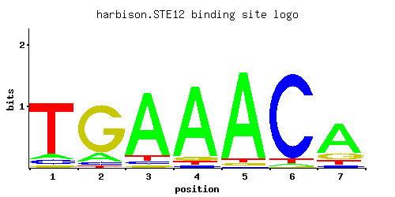
A | 0.076 0.130 0.855 0.876 0.923 0.027 0.692 C | 0.075 0.052 0.044 0.030 0.008 0.919 0.052 G | 0.040 0.790 0.036 0.052 0.033 0.006 0.163 T | 0.809 0.029 0.065 0.041 0.036 0.047 0.094
A | 7 13 85 87 92 2 69 C | 7 5 4 3 0 91 5 G | 4 79 3 5 3 0 16 T | 80 2 6 4 3 4 9
A | -1.44 -0.90 0.98 1.01 1.06 -2.47 0.77 C | -0.88 -1.24 -1.41 -1.79 -3.11 1.63 -1.24 G | -1.50 1.48 -1.61 -1.24 -1.70 -3.40 -0.10 T | 0.93 -2.40 -1.59 -2.05 -2.18 -1.92 -1.23
STE12Macisaac et. alP = 2.08e-25View matrix ↘
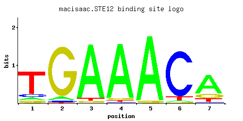
A | 0.079 0.058 0.923 0.929 0.962 0.031 0.686 C | 0.102 0.027 0.004 0.014 0.001 0.887 0.030 G | 0.076 0.908 0.031 0.036 0.036 0.013 0.177 T | 0.743 0.007 0.042 0.021 0.001 0.069 0.107
A | 7 5 92 92 96 3 68 C | 10 2 0 1 0 88 3 G | 7 90 3 3 3 1 17 T | 74 0 4 2 0 6 10
A | -1.40 -1.71 1.06 1.07 1.10 -2.33 0.76 C | -0.57 -1.90 -3.81 -2.55 -5.19 1.59 -1.79 G | -0.86 1.62 -1.76 -1.61 -1.61 -2.63 -0.02 T | 0.84 -3.82 -2.03 -2.72 -5.77 -1.53 -1.10
STE12_APachkov et alP = 4.15e-25View matrix ↘
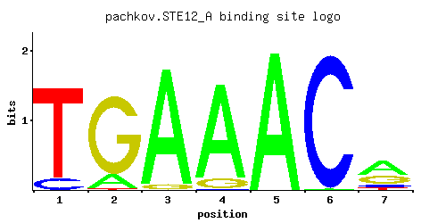
A | 0.001 0.150 0.955 0.898 1.000 0.004 0.511 C | 0.115 0.001 0.001 0.006 0.001 0.993 0.100 G | 0.003 0.843 0.045 0.096 0.001 0.001 0.313 T | 0.882 0.007 0.001 0.001 0.001 0.003 0.076
A | 0 15 95 89 100 0 51 C | 11 0 0 0 0 99 10 G | 0 84 4 9 0 0 31 T | 88 0 0 0 0 0 7
A | -5.77 -0.76 1.09 1.03 1.14 -4.38 0.47 C | -0.45 -5.19 -5.19 -3.40 -5.19 1.71 -0.59 G | -4.09 1.54 -1.39 -0.63 -5.19 -5.19 0.55 T | 1.01 -3.82 -5.77 -5.77 -5.77 -4.67 -1.44
STE12_BPachkov et alP = 3.10e-19View matrix ↘
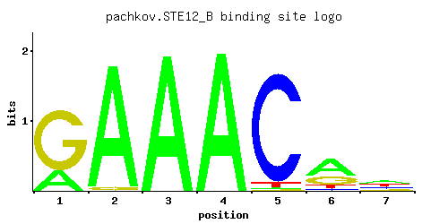
A | 0.251 0.089 0.042 0.001 0.001 0.001 0.005 C | 0.127 0.290 0.005 0.001 0.003 0.032 0.752 G | 0.248 0.074 0.944 0.001 0.003 0.001 0.001 T | 0.374 0.546 0.008 1.000 0.994 0.968 0.243
A | 25 8 4 0 0 0 0 C | 12 28 0 0 0 3 75 G | 24 7 94 0 0 0 0 T | 37 54 0 100 99 96 24
A | -0.24 -1.28 -2.03 -5.77 -5.77 -5.77 -4.16 C | -0.35 0.48 -3.58 -5.19 -4.09 -1.73 1.43 G | 0.32 -0.89 1.66 -5.19 -4.09 -5.19 -5.19 T | 0.16 0.53 -3.69 1.14 1.13 1.11 -0.28
STE12Zhu J and MQ ZhangP = 1View matrix ↘
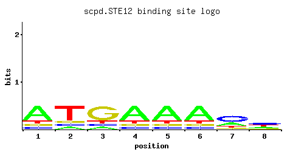
A | 0.62 0.12 0.12 0.62 0.62 0.62 0.25 0.25 C | 0.12 0.12 0.12 0.12 0.12 0.12 0.50 0.38 G | 0.12 0.12 0.62 0.12 0.12 0.12 0.12 0.12 T | 0.12 0.62 0.12 0.12 0.12 0.12 0.12 0.25
A | 62 12 12 62 62 62 25 25 C | 12 12 12 12 12 12 50 38 G | 12 12 62 12 12 12 12 12 T | 12 62 12 12 12 12 12 25
A | 0.66 -0.98 -0.98 0.66 0.66 0.66 -0.25 -0.25 C | -0.41 -0.41 -0.41 -0.41 -0.41 -0.41 1.02 0.75 G | -0.41 -0.41 1.24 -0.41 -0.41 -0.41 -0.41 -0.41 T | -0.98 0.66 -0.98 -0.98 -0.98 -0.98 -0.98 -0.25
Gene-level annotations and interactions.
Genes bound in ChIP-chip experiments 130 genes
YAL002W, YAL028W, YAL029C, YAR014C, YAR015W, YAR027W, YBL004W, YBL016W, YBL017C, YBR011C, YBR083W, YCL027W, YCL055W, YCL056C, YCR017C, YCR018C-A, YCR019W, YCR026C, YCR027C, YCR089W, YDL013W, YDL127W, YDL128W, YDR042C, YDR085C, YDR098C-A, YDR098C-B, YDR169C, YDR210W, YDR240C, YDR281C, YDR309C, YDR316W-A, YDR316W-B, YDR317W, YDR417C, YDR419W, YDR461W, YER159C-A, YER160C, YFL026W, YFL027C, YFL039C, YFL049W, YFL050C, YFR023W, YGL032C, YGL050W, YGL062W, YGL067W, YGL069C, YGR013W, YGR014W, YGR038C-A, YGR038C-B, YGR163W, YGR164W, YGR189C, YGR218W, YGR221C, YHL009W-A, YHL009W-B, YHR005C, YHR072W, YHR072W-A, YHR079C, YHR082C, YHR083W, YHR084W, YIL015W, YIL036W, YIL037C, YIL082W, YIL083C, YIL123W, YJL060W, YJL148W, YJL186W, YJL187C, YKL095W, YKL096W, YKL189W, YKL209C, YKL220C, YKR040C, YKR041W, YKR042W, YKR089C, YKR090W, YKR091W, YLR105C, YLR452C, YML046W, YML047C, YML068W, YML124C, YMR013C, YMR065W, YMR119W, YMR119W-A, YMR197C, YMR198W, YMR199W, YMR204C, YMR232W, YNL025C, YNL043C, YNL145W, YNL192W, YNL279W, YNL280C, YNL289W, YNL331C, YNR044W, YOR048C, YOR086C, YOR092W, YOR236W, YOR246C, YOR247W, YOR248W, YOR343C, YOR343C-A, YOR343C-B, YPL146C, YPL156C, YPL192C, YPL198W, YPR002C-A, YPR135W
Genes affected by TF deletion 1 genes
No Data
Predicted TF–TF partners 1 genes
LYS14